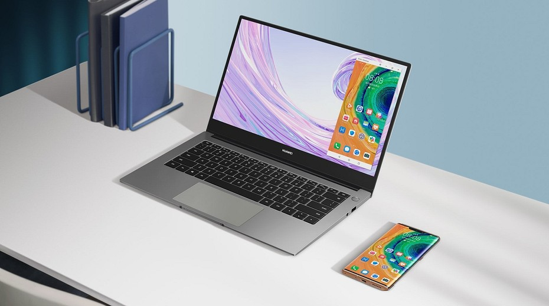

Совсем недавно Huawei Представили новый ультрабук Huawei MateBook D 15.
Своим внешним видом ноутбук не привлекает лишнего внимания. Классический офисный стиль Матовый корпус, экран с тонкой рамкой и логотип в центре. Сам ноутбук открывается одной рукой без каких-либо усилий благодаря прекрасному шарниу.
Соотношение сторон экрана — 16:9, разрешение — Full HD. Здесь ничего нового. Недостаток экрана — плотность пикселей. Здесь она составляет 167 ppi. Угол обзора экрана — 178 градусов. Яркость составляет 250 нит.
Сам компьютер произведен в июле 2020 года. Внутри него расположены процессор AMD Ryzen 5 4500U (2423 MHz), две плашки памяти на 8 гигабайт DDR4 с максимальной частотой 2667 MT/s от компании Samsung, разделенный на два сектора твердотельный дисковый накопитель WDC PC SN530 SDBPNPZ-512G-1027 на 512 ГБ (NVMe) от Western Digital, встроенный сетевой адаптер Realtek 8822CE Wireless LAN 802.11ac PCI-E NIC и видеоадаптер на процессоре AMD Radeon(TM) Graphics (512 МБ). В качестве звукового решения используется Realtek ALC256 @ AMD K17.6. Ноутбук поставляется с аккумуляторной Li-Ion батареей от компании Desay (41428 mWh по паспорту). При работе в стандартном режиме (серфинг в сети, чтение, редакторы) стопроцентного заряда хватит на 5-6 часов. В играх — примерно на час.
Huawei MateBook D 15 - Легкий, компактый и весьма сбалансированный ноутбук, предназначенный для офисный работы. Хоть он по дизайну и уступает модному Honor MagicBook 15, но в тоже время превосходит его по скорости SSD.